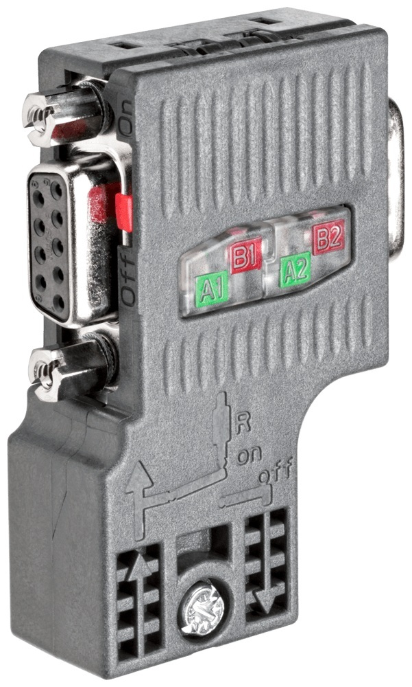
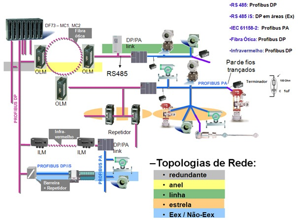

PROFIBUS DP (DECENTRALIZED PERIPHERALS)
ESTRUTURA FÍSICA E CABEAMENTO
PROFIBUS DP NA AUTOMAÇÃO INDUSTRIAL
O PROFIBUS DP (Decentralized Peripherals) é uma rede de comunicação industrial desenvolvida para conectar controladores, módulos de entradas e saídas remotas, acionamentos, válvulas, sensores e outros dispositivos de campo. Seu objetivo é permitir a troca rápida e organizada de dados entre o controlador e os equipamentos distribuídos pela máquina ou instalação.
O controlador normalmente atua como mestre da comunicação cíclica, enquanto os dispositivos periféricos atuam como escravos. O mestre envia os dados de saída e solicita os dados de entrada, permitindo atualizar o estado do processo. Também existem serviços de parametrização, diagnóstico e comunicação acíclica, conforme a versão DP-V0, DP-V1 ou DP-V2 suportada pelos equipamentos.
MEIOS FÍSICOS E CABOS ADOTADOS
A implementação mais comum do PROFIBUS DP utiliza a interface elétrica RS-485, com um cabo de cobre formado por um par trançado e blindado. Também podem ser utilizados meios ópticos, por meio de módulos e repetidores apropriados, para aumentar a distância, melhorar a imunidade a interferências e interligar áreas separadas.
CABEAMENTO DE COBRE (RS-485)
- Cabo tipo A: é o cabo recomendado para instalações PROFIBUS DP. Possui par trançado, blindagem e características elétricas controladas para permitir a comunicação diferencial em taxas de até 12 Mbit/s.
- Blindagem: normalmente utiliza malha ou folha metálica envolvendo o par, com continuidade ao longo do segmento. A blindagem reduz a influência de interferências eletromagnéticas presentes em ambientes industriais.
- Impedância e terminação: o cabo deve respeitar a impedância característica definida para a rede, e cada segmento RS-485 deve possuir terminação ativa nas duas extremidades físicas. Derivações longas e terminações adicionais devem ser evitadas.
A transmissão ocorre por dois condutores de dados, identificados tradicionalmente como A e B, e não deve ser confundida com a alimentação dos dispositivos. O cabo de comunicação não fornece, por si só, a energia necessária aos sensores, módulos e acionamentos, que normalmente recebem alimentação separada.
CABEAMENTO POR FIBRA ÓPTICA
- Fibra multimodo: utilizada em enlaces ópticos industriais de curta e média distância, conforme o transceptor e o tipo de fibra instalados.
- Fibra monomodo: indicada para enlaces ópticos de maior alcance, quando a distância e o orçamento óptico exigirem esse tipo de meio.
- Módulos ópticos PROFIBUS: convertem os sinais elétricos RS-485 em sinais ópticos e permitem construir enlaces ponto a ponto, em estrela ou em anel, dependendo dos equipamentos utilizados.
A fibra óptica é especialmente útil em percursos sujeitos a altos níveis de interferência eletromagnética, em interligações entre prédios ou em locais com diferenças de potencial de aterramento. A distância alcançada depende do tipo de fibra, do módulo óptico, da taxa de transmissão e das perdas em conectores e emendas.
CONECTORES PADRONIZADOS E IDENTIFICAÇÃO
- D-Sub de 9 pinos (DB9): conector muito utilizado em controladores, placas de comunicação e dispositivos PROFIBUS DP. Alguns modelos incorporam terminação e conexão para diagnóstico.
- M12 codificado B: conector circular industrial utilizado em determinados equipamentos e cabos PROFIBUS, oferecendo conexão rosqueada e maior retenção mecânica.
- Bornes e terminais: alguns dispositivos e repetidores utilizam terminais para conexão direta do par de dados e da blindagem, conforme o projeto do equipamento.
- Conectores ópticos: as interfaces de fibra podem utilizar conectores ST/BFOC, SC ou outros formatos definidos pelo módulo óptico. O tipo deve corresponder ao transceptor instalado.

TOPOLOGIAS SUPORTADAS NO PROFIBUS DP

TOPOLOGIA EM BARRAMENTO LINEAR
É a topologia mais comum para o meio físico RS-485. Os dispositivos são conectados ao mesmo segmento de cabo, com terminação ativa nas duas extremidades. O comprimento das derivações deve ser controlado, principalmente em taxas elevadas, para evitar reflexões e deformações do sinal.
TOPOLOGIAS EM ESTRELA, ÁRVORE E ANEL ÓPTICO
Com repetidores e módulos de ligação por fibra óptica, é possível dividir a rede em segmentos e adotar topologias em estrela, árvore ou anel. Essas configurações facilitam a distribuição física da rede e podem oferecer caminhos redundantes, desde que os equipamentos e os mecanismos de diagnóstico e recuperação sejam compatíveis.
INTERFACE ELÉTRICA E TRANSMISSÃO DE SINAIS
SINALIZAÇÃO E NÍVEIS NA INTERFACE RS-485
Na versão elétrica mais comum do PROFIBUS DP, os dados são transmitidos por sinalização diferencial balanceada conforme a interface RS-485. O receptor interpreta a diferença de tensão entre os condutores A e B, em vez de medir cada fio em relação ao terra. Essa característica melhora a rejeição a ruídos que afetam os dois condutores de maneira semelhante.
- Codificação: a transmissão serial utiliza caracteres assíncronos com bits de início, dados, paridade e parada. O protocolo organiza esses caracteres em telegramas PROFIBUS.
- Taxa configurada: todos os dispositivos de um mesmo segmento elétrico devem operar com a mesma taxa de transmissão, definida durante a configuração da rede.
- Terminação ativa: mantém as condições elétricas apropriadas nas extremidades do segmento e ajuda a evitar reflexões que podem provocar erros de comunicação.
ALIMENTAÇÃO PELO BARRAMENTO
O PROFIBUS DP convencional não utiliza o par de dados RS-485 para alimentar os dispositivos. Controladores, módulos remotos, sensores, atuadores e repetidores recebem energia por fontes e circuitos próprios, normalmente em corrente contínua, conforme os requisitos de cada equipamento.
ISOLAÇÃO E PROTEÇÃO CONTRA RUÍDOS
- Blindagem do cabo: utilizar cabo PROFIBUS apropriado, mantendo a continuidade da blindagem e empregando conectores e caixas de passagem compatíveis.
- Aterramento e equipotencialização: planejar a ligação da blindagem e a equipotencialização da instalação conforme as orientações do fabricante e as normas aplicáveis, evitando correntes indesejadas e laços de terra.
- Separação de potência: evitar a instalação paralela prolongada junto a cabos de motores, inversores e alimentação de potência. Quando o cruzamento for necessário, deve ser realizado de forma planejada.
- Isolação galvânica: interfaces isoladas e repetidores apropriados podem reduzir a propagação de diferenças de potencial e proteger os equipamentos conectados.
- Fibra óptica: oferece isolamento elétrico entre segmentos e imunidade do próprio meio óptico a interferências eletromagnéticas.
O PROFIBUS DP também possui variantes especiais para ambientes classificados, como soluções RS-485-IS. A aplicação em área explosiva exige equipamentos certificados e projeto específico; não se deve considerar que qualquer instalação RS-485 convencional seja intrinsecamente segura.
PROTOCOLO DE ENLACE E ACESSO AO MEIO (MAC)
A camada de enlace do PROFIBUS é denominada FDL (Fieldbus Data Link). Ela organiza o acesso ao barramento, o endereçamento das estações, a troca de telegramas e a verificação de erros. O sistema combina dois mecanismos: passagem de token entre estações mestres e comunicação mestre-escravo entre o mestre ativo e os dispositivos periféricos.
MÉTODO DE ACESSO AO MEIO
- Token passing entre mestres: quando existem vários mestres, o direito de transmitir é transferido por um telegrama de token em uma sequência lógica. Somente o mestre que possui o token pode iniciar a comunicação como mestre.
- Mestre-escravo: o mestre ativo consulta seus escravos e recebe as respostas correspondentes. Os escravos não iniciam livremente transmissões de dados de processo; respondem às solicitações do mestre.
- Sistema mono-mestre: há um mestre responsável pelo controle da comunicação com os escravos, simplificando a programação do ciclo do barramento.
- Sistema multi-mestre: dois ou mais mestres compartilham o barramento por meio da passagem de token, respeitando o tempo de posse e as regras de acesso.
ESTRUTURA DO QUADRO E MENSAGEM PROFIBUS DP
As mensagens PROFIBUS são chamadas de telegramas e podem apresentar formatos diferentes conforme o tipo de serviço. Os quadros incluem delimitadores de início, campos de comprimento quando necessários, endereços de destino e origem, controle da função, dados e verificação de integridade. O encerramento utiliza um delimitador específico nos formatos correspondentes.
- SD (Start Delimiter): identifica o início do telegrama. Existem formatos com diferentes delimitadores, como SD1, SD2, SD3 e SD4.
- LE e LEr: campos de comprimento e de comprimento redundante utilizados nos telegramas de tamanho variável, permitindo conferir a extensão da mensagem.
- DA (Destination Address): indica o endereço da estação de destino.
- SA (Source Address): identifica a estação de origem da mensagem.
- FC (Function Code): contém informações de controle que identificam a função e características do telegrama.
- DU (Data Unit): transporta os dados de processo, diagnóstico, parametrização ou outras informações de usuário.
- FCS (Frame Check Sequence): contém a soma de verificação do telegrama. A transmissão serial também utiliza paridade em cada caractere para auxiliar a detecção de erros.
- ED (End Delimiter): marca o encerramento do telegrama nos formatos que utilizam delimitador final.
TIPOS DE COMUNICAÇÃO E SERVIÇOS
- DP-V0: oferece a comunicação cíclica básica entre mestre e escravos, além de funções de diagnóstico.
- DP-V1: adiciona comunicação acíclica para parametrização, monitoramento, alarmes e diagnóstico, paralelamente à troca cíclica de dados.
- DP-V2: acrescenta recursos como comunicação direta entre escravos e modo isócrono, utilizado principalmente em aplicações de acionamentos e controle de movimento.
PARÂMETROS OPERACIONAIS E DESEMPENHO
TAXA DE TRANSMISSÃO (BAUD RATE / BIT RATE)
O PROFIBUS DP permite selecionar taxas de transmissão padronizadas entre 9,6 kbit/s e 12 Mbit/s. A taxa escolhida deve ser suportada por todos os dispositivos e componentes do segmento, e influencia diretamente o tempo de ciclo e o comprimento máximo do cabo de cobre.
- Taxas mais baixas: 9,6 kbit/s, 19,2 kbit/s, 45,45 kbit/s e 93,75 kbit/s podem ser utilizadas em segmentos mais longos, conforme o cabo e o projeto.
- Taxas intermediárias: 187,5 kbit/s, 500 kbit/s e 1,5 Mbit/s permitem equilibrar distância e velocidade em diversas instalações.
- Taxas elevadas: 3 Mbit/s, 6 Mbit/s e 12 Mbit/s são empregadas quando se deseja maior capacidade de comunicação e os comprimentos dos segmentos são menores.
DISTÂNCIA MÁXIMA DOS SEGMENTOS
Para cabo tipo A em cobre, os valores máximos usuais por segmento variam conforme a taxa de transmissão. Os valores abaixo não incluem a ampliação obtida com repetidores ou conversores ópticos:
- 9,6 a 93,75 kbit/s: até 1.200 metros por segmento.
- 187,5 kbit/s: até 1.000 metros por segmento.
- 500 kbit/s: até 400 metros por segmento.
- 1,5 Mbit/s: até 200 metros por segmento.
- 3 a 12 Mbit/s: até 100 metros por segmento.
O uso de repetidores permite conectar segmentos e ampliar a extensão total da rede. Para fibra óptica, a distância depende do tipo de fibra e do módulo óptico empregado, podendo alcançar centenas de metros ou quilômetros conforme o equipamento.
DETERMINISMO E TEMPO DE CICLO
Classificação: o PROFIBUS DP possui comunicação cíclica controlada pelo mestre, permitindo comportamento determinístico quando a rede é corretamente dimensionada e configurada.
Tempo de ciclo: depende da taxa de transmissão, quantidade de escravos, tamanho dos dados de entrada e saída, diagnósticos e serviços acíclicos. Portanto, não existe um tempo único garantido para qualquer instalação.
Aplicações de movimento: o DP-V2 pode operar em modo isócrono, sincronizando a atualização de dados em aplicações compatíveis, como acionamentos e servodrives.
NÍVEL NA PIRÂMIDE DA AUTOMAÇÃO
Classificação: atua principalmente nos níveis 1 e 2, conectando dispositivos de campo, módulos de entradas e saídas, acionamentos e controladores.
Justificativa: o PROFIBUS DP realiza a troca de dados entre o controlador e as periferias descentralizadas, apoiando o controle de máquinas, células e processos. Os dados podem ser encaminhados aos níveis de supervisão por meio do controlador.